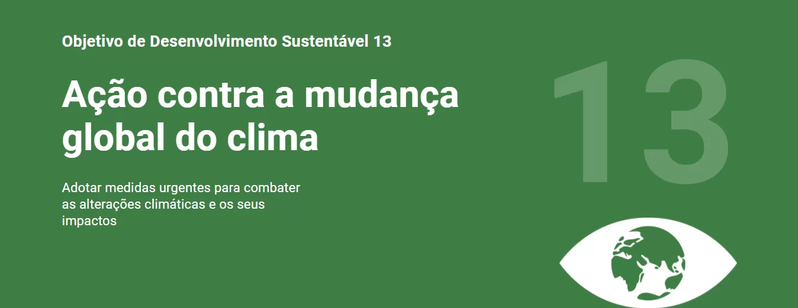
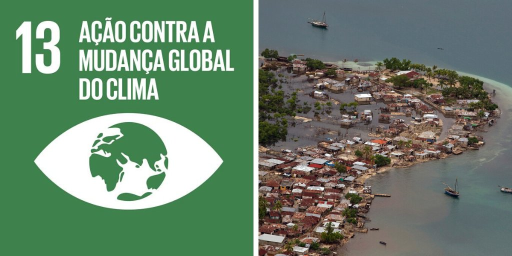
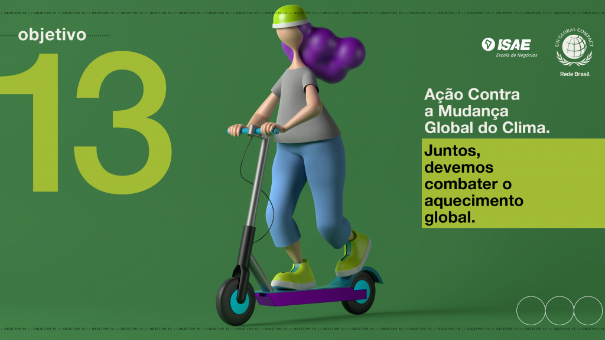

- 
- 
- 

A ODS 13 tem o objetivo específico de Tomar medidas urgentes para combater a mudança climática e seus impactos. Ela reconhece a necessidade de ações coletivas para mitigar as mudanças climáticas, reduzir as emissões de gases de efeito estufa e fortalecer a resiliência e a capacidade de adaptação aos impactos climáticos.
A ODS 13 foi criada para enfrentar as crescentes preocupações globais com as alterações climáticas. Ela busca estabelecer metas e ações concretas para combater as mudanças climáticas, limitar o aquecimento global e proteger ecossistemas vitais. Além disso, a ODS 13 visa promover a justiça climática, apoiando os países em desenvolvimento e garantindo que as ações sejam equitativas. Por meio da cooperação internacional e mobilização de recursos financeiros, a ODS 13 busca proteger o planeta, preservar os recursos naturais e promover um desenvolvimento sustentável e resiliente ao clima para as futuras gerações.
-> Fortalecer a resiliência e capacidade de adaptação a riscos relacionados ao clima e desastres
naturais em todos os países.
-> Integrar medidas de mitigação e adaptação às mudanças climáticas em políticas, estratégias e
planejamentos nacionais.
-> Mobilizar e aumentar substancialmente os recursos financeiros de várias fontes para combater as
mudanças climáticas.
-> Promover mecanismos para elevar a capacidade de planejamento e gestão dos países menos
desenvolvidos, inclusive através de apoio financeiro.
-> Implementar o compromisso de países desenvolvidos em destinar US$ 100 bilhões anuais em
financiamento climático para os países em desenvolvimento até 2020.